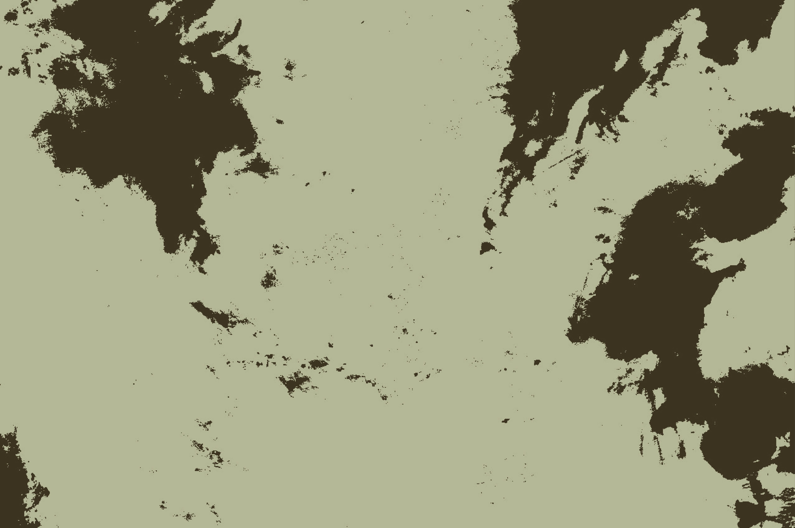

White streams pool
in an ever-shifting flow atop its surface.
Each moment commemorated by the enduring undulations of that deep, abundant blue.
The light’s perpetual crawl washes across the sphere in equal measure as the mass turns, and turns, and turns.
y informs the meeting between Green and Blue, where Green shifts and ripples almost in response to the fluctuation of Blue, but in more
languid gradation.
Upon inspection,
this sphere
strikes
an impossible equilibrium
between the
vast and
minute.
Vastness is made apparent through closeness.
Masses of Green conceal the abundance of rich hues, shapings, and patterns that comprise it.
Trails unravel in accordance with the ebb and flow of matter, until suddenly,
miraculously,
there they are.
.
At light’s touch, they emerge into the open, populating the open space and the Green becomes alive.
Small forms bloom and
follow the light as it travels.
Here, in this short time where the light lays, I watch them travel, consume, converse, and I wonder how it would be.
I feel, achingly, the untraversable distance between being and watching.
I feel it in the steps they take with their limbs, in the unknowable scent of morning liquids they consume, in the bodily movements they exhibit when interacting with another.
Country Netherlands
Region Groningen
City Leek
Latitude 53.162500
Longitude 6.376390
ZIP 9351
Timezone +01:00
Another – what could that be?
To exist, together
Such distance between them and the stars, they don't know how together they are on this lonely planet.
How exhilarating, to enter the light, into the world and know there are others like them to see and be seen by.
To feel air against your flesh, to meet eye to eye.